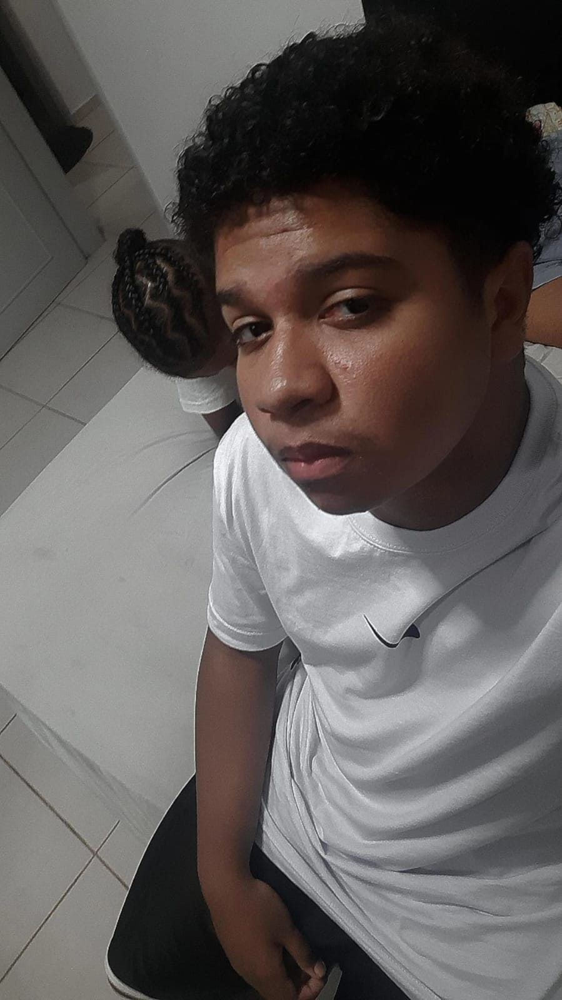
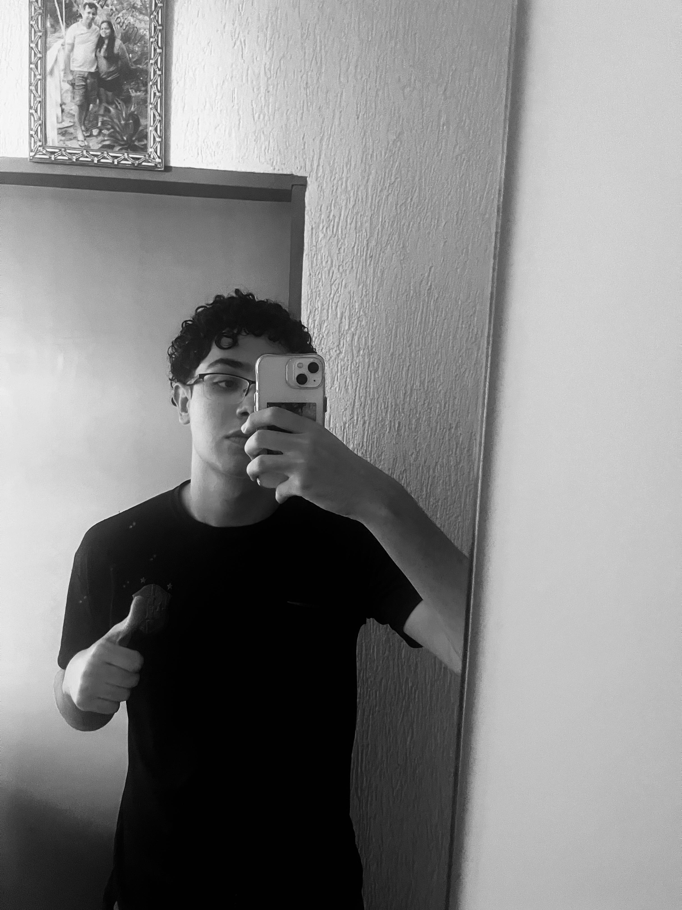
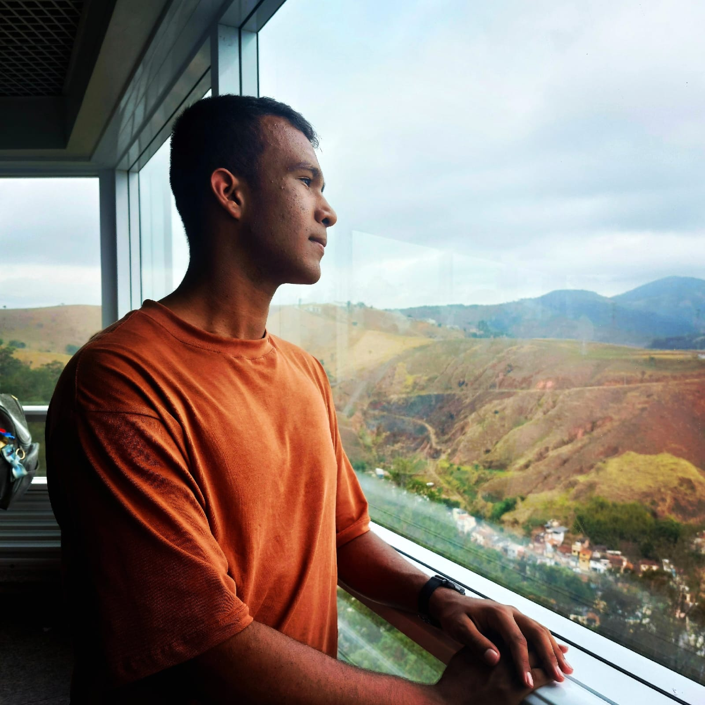
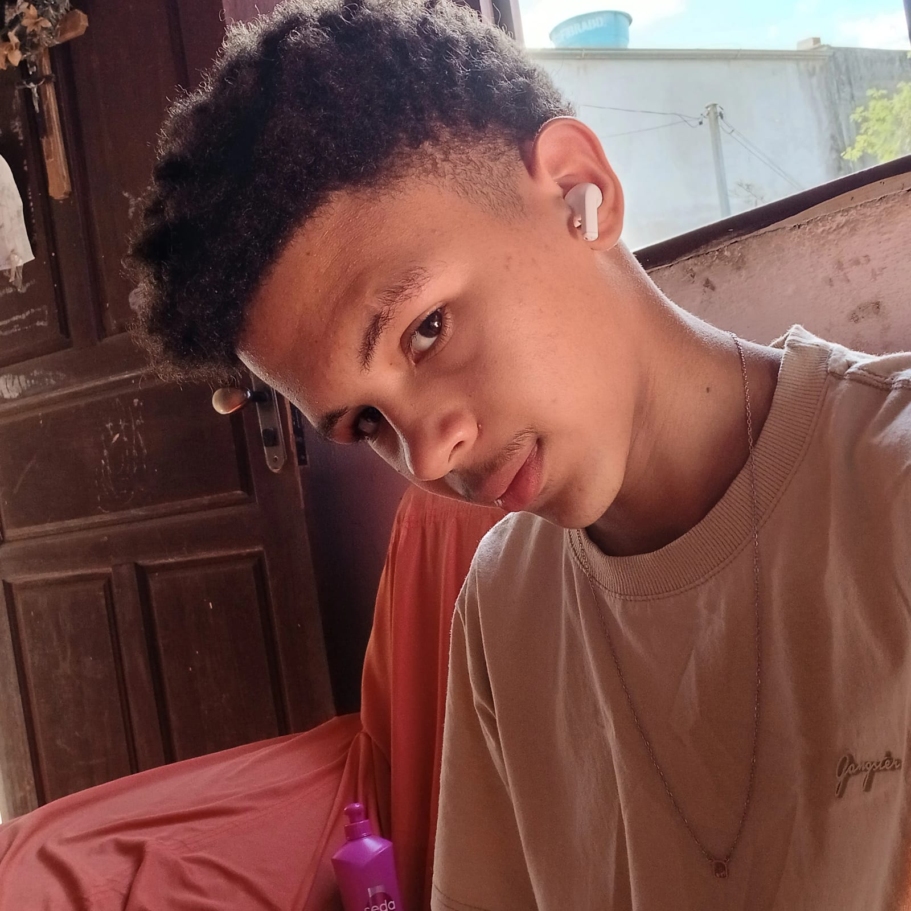

Caio

Estudante do Ensino medio de Desenvolvimento de Sistemas, concluindo o 3º ano do ensino médio, com seus 18 anos de idade, ajudou na criação do Slide, com a ajuda do Guilherme e na modelagem
Guilherme
Estudante do ensino medio de Desenvolvimento de Sistemas, concluindo o 3º ano, com seus 17 anos de idade, ajudou na ideia do projeto, e auxiliou no esboço do site
Diogo

Estudante do Ensino medio de Desenvolvimento de sistemas concluindo o 3º ano do Ensino Médio, com seus 17 anos de idade. Auxiliou no esboço do site e apoiou no Desenvolvimento da interface.
Jonnatan

com seus 17 anos, Estudante do Ensino Médio, com o curso de Desenvolviemnto de Sistemas, concluindo a 3º ano, fez o Banco de Dados, ajudou e auxiliou no esboço do site, foi assistente da criação da API
Paulo

Com seus 17 anos, Estudante do Ensino medio com o curso de Desenvolvimento de Sistemas, fez a API com Banco de Dados e ajudou a juntas o front end com back utilizando a ferramenta Python
Pedro
Com seus 17 anos, Estudante no Ensino Médio com o curso de Desenvolvimento de Sistemas , fez a intefce do Site com o auxilio do Diogo, e colaborou a juntar o front-end com Back-end com o Paulo.